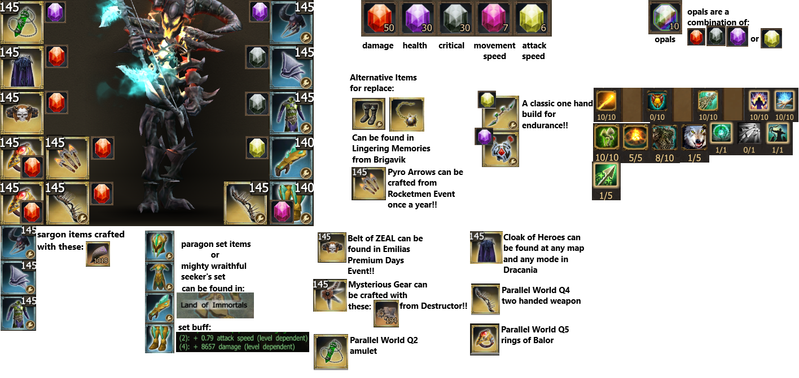

Οδηγός Πολεμιστή: Ο Ακούραστος Tank
Εισαγωγή στον Dragonknight
Ο Dragonknight είναι η επιτομή της αντοχής και της δύναμης στο Drakensang Online. Με την ικανότητα να απορροφά τεράστιο damage και να προκαλεί παράλληλα ζημιά, είναι απαραίτητος σε κάθε ομάδα. Είτε επιλέξεις να παίξεις ως αλύγιστος tank είτε ως ένας επιθετικός DPS warrior, ο Dragonknight προσφέρει πολλές επιλογές.
Βασικά Στατιστικά: Υγεία, Θωράκιση, Αντίσταση, Ζημιά (για DPS builds).
Builds για Αρχάριους
Για αρχάριους, συνιστάται ένα build που εστιάζει στην αντοχή. Συγκεντρώστε αντικείμενα με υψηλή Θωράκιση, Υγεία και Αντίσταση. Οι βασικές σας ικανότητες θα πρέπει να περιλαμβάνουν αμυντικά buffs και AoE επιθέσεις για αποτελεσματικό farming.
Mid-Game Builds
Εστιάστε σε sets που προσφέρουν τεράστια αυξημένη ζημιά και aggro. Ιδανικό για να κρατάτε τους bosses μακριά από την ομάδα.
Αυτό το build θυσιάζει λίγη αντοχή για να μεγιστοποιήσει την ζημιά. Ιδανικό για γρήγορα clears σε dungeons.
Οδηγός Τοξότη: Ο Κυνηγός των Σκιών
Εισαγωγή στον Ranger
Ο Ranger είναι ο master του ranged combat και των παγίδων. Με την ικανότητα να κινούνται γρήγορα, να προκαλούν τεράστια ζημιά από απόσταση και να ελέγχουν το πεδίο μάχης με παγίδες, είναι ένας πολύπλευρος χαρακτήρας.
Βασικά Στατιστικά: Ζημιά, Ταχύτητα Επίθεσης, Κρίσιμο Χτύπημα, Κρίσιμη Ζημιά.
Builds για Αρχάριους
Ξεκινήστε εστιάζοντας στην ζημιά και την επιβίωση. Μάθετε να χρησιμοποιείτε τις παγίδες σας αποτελεσματικά για έλεγχο πλήθους και να κρατάτε αποστάσεις από τους εχθρούς. Παρακάτω
θα δείτε δύο από τα build που μπορεί να φτιάξει ένας αρχάριος τοξότης για να μπορέσει να ανταπεξέλθει στο παιχνίδι
1. Build για όπλο ενός χεριού
1. Build για όπλο δύο χεριών (Mid-Game build)

Οδηγός Μάγου: Ο Άρχοντας των Στοιχείων
Εισαγωγή στον Spellweaver
Ο Spellweaver είναι ο master της μαγείας, ικανός να προκαλέσει τεράστια στοιχειώδη ζημιά σε μεγάλες περιοχές. Με μια πληθώρα ξορκιών για AoE, single target και crowd control, είναι μια δυναμική προσθήκη σε κάθε ομάδα.
Βασικά Στατιστικά: Ζημιά, Κρίσιμο Χτύπημα, Κρίσιμη Ζημιά, Ταχύτητα Επίθεσης.
Early-Mid Game build
Ξεκινήστε με βασικές επιθέσεις και AoE ξόρκια για γρήγορο farming. Εστιάστε στην εύρεση αντικειμένων που αυξάνουν τη ζημιά σας και τη συνολική σας επιβίωση.
Οδηγός Πολυμήχανου Νάνου: Ο Μηχανικός του Θανάτου
Εισαγωγή στον Steam Mechanicus
Ο Steam Mechanicus είναι μια μοναδική κλάση που βασίζεται σε μηχανικά gadgets, τουρρέτες και εκρηκτικά. Είναι εξαιρετικός τόσο σε single target damage όσο και σε AoE, με την ικανότητα να δημιουργεί μια "ζώνη θανάτου" γύρω του.
Βασικά Στατιστικά: Ζημιά, Ταχύτητα Επίθεσης, Κρίσιμο Χτύπημα, Κρίσιμη Ζημιά.
Builds για Αρχάριους
Εστιάστε στην τοποθέτηση τουρρετών και τη χρήση βασικών εκρηκτικών ικανοτήτων. Μάθετε να διαχειρίζεστε τους πόρους σας (ατμός) και να παραμένετε σε ασφαλή απόσταση.
- **Suggested Skills:** Machine Gun Turret, Steam Bomb, Tesla Coil, Dwarf in the Box.
- **Early Game Gear:** Set items από Heredur, Grimmag.
End-Game Builds
Turret Master Build (PvE)
Αυτό το build μεγιστοποιεί την απόδοση των τουρρετών σας, μετατρέποντάς σας σε μια μηχανή καταστροφής.
- **Set:** Set items που αυξάνουν το damage/duration των τουρρετών, ή μειώνουν το cooldown τους.
- **Stats:** Attack Speed, Crit Hit Rate, Crit Damage (για τις τουρρέτες), Health (για επιβίωση).
- **Playstyle:** Τοποθέτηση τουρρετών, διατήρηση τους ενεργές, χρήση άλλων ικανοτήτων για συμπλήρωση damage.
Explosive Damage Build (PvP/PvE)
Εστιάζει σε high burst damage με εκρηκτικά και άμεσες επιθέσεις. Ιδανικό για γρήγορα kills σε PvP ή για elite farming.
- **Set:** Full Keen's Mighty Set, Herald Set.
- **Stats:** Weapon Damage, Crit Hit Rate, Crit Damage, Attack Speed.
- **Playstyle:** Κοντινή/μεσαία απόσταση, burst damage, χρήση "Dwarf in the Box" για διαφυγή/επίθεση.